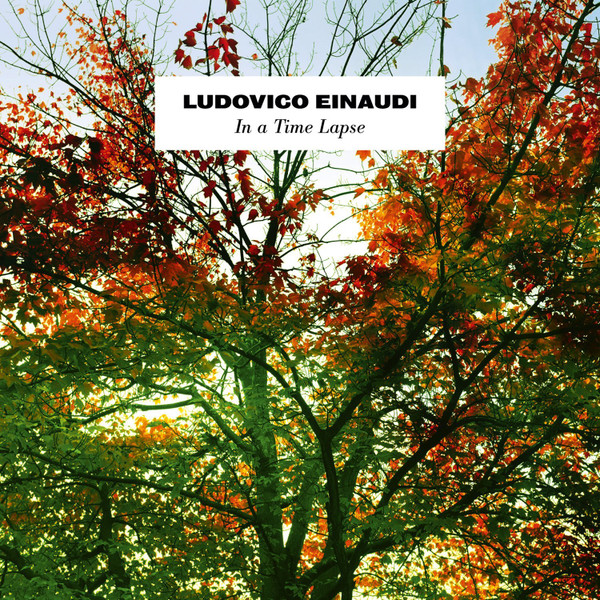

LP
In A Time Lapse
Ludovico Einaudi
Media: NM · Sleeve: NM
—
Personal
Discogs SuggestedCA$116.98
Discogs MedianCA$116.98
Discogs HighCA$116.98
- Physical Copy ID
- BB-LP-105
- Year
- 2013
- Label
- Decca
- Catalog #
- 3735296
- Country
- GBUK
- Genre / Style
- Classical · Modern